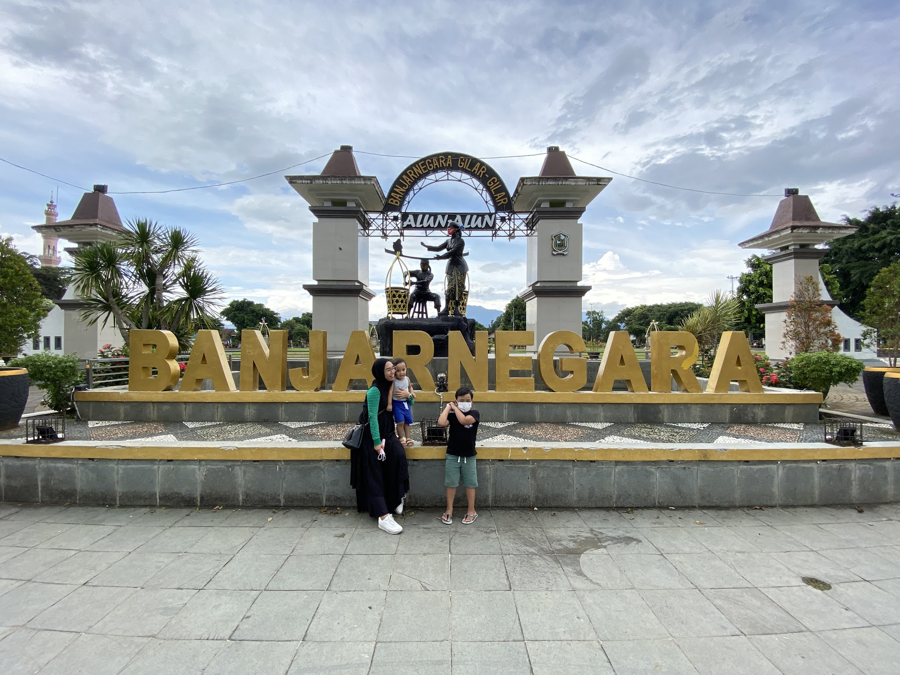

Rekomendasi wisata di daerah Banjarnegara menurut saya cukup beragam. Karena kondisi Geografis Banjarnegara yang sangat unik,
kabupaten Banjarnegara mempunyai beragam destinasi wisata yang siap untuk kita kunjungi, dari curug, kawah, taman sampai kolam renang pun tersedia.
Karena banyaknya pilihan tersebut, berikut saya rekomendasikan beberapa tempat wisata yang patut diperhatikan jika kalian ingin pergi liburan :
Kawah sikidang

Salah satu destinasi wisata yang menjadi daya tarik di dieng adalah Kawah Sikidang yang fenomenal.
Kawah ini dibaeri nama sikidang yang mempunyai arti kidang / kijang.
Wisata ini berada di Desa Dieng Kulon, Kecamatan Batur, Kabupaten Banjarnegara.
lihat selengkapnya....
Curug Mrawu
Wisata Curug Mrawu Banjarnegara Jawa Tengah adalah salah satu tempat wisata yang berada di Desa Giritirta,
Kecamatan Pejawaran, Kabupaten Banjarnegara, Jawa Tengah, Indonesia.
lihat selengkapnya....
Curug Pitu
Curug Pitu atau Air Terjun Curug 7 merupakan salah satu alternatif pilihan yang bisa Anda kunjungi untuk wisata bersama keluarga
di daerah Banjarnegara Jawa Tengah. Menikmati liburan bersama keluarga merupakan momen yang sangat menyenangkan
lihat selengkapnya....
Alun Alun Banjarnegara

Alun Alun Banjarnegara terletak di Jl. Mayjend Panjaitan No.11-3, Kutabanjarnegara, Kec. Banjarnegara,
Kab. Banjarnegara, Jawa Tengah 53418.
lihat selengkapnya....
Kawah Candradimuka

Kawah Candradimuka merupakan kawah aktif di Kawasan Wisata Dataran Tinggi Dieng. Meskipun kurang populer,
namun Kawah Candradimuka tetap menjadi destinasi wisata yang menarik untuk dikunjungi.
lihat selengkapnya....
Surya Yudha Park

Obyek wisata Surya Yudha Park berada di pusat kota Banjarnegara, sehingga untuk mengunjunginya tidak
butuh waktu lama. Akses jalan yang baik dengan plang penunjuk arah menuju Surya Yudha Park akan memudahkan
perjalanan libur akhir pekan anda.
lihat selengkapnya....
Sumur Jalatunda

Di Desa Pekasiran, Kecamatan Batur, Kabupaten Banjarnegara, terdapat sebuah sumur berukuran raksasa.
Sumur ini bernama Sumur Jalatunda. Disebut raksasa karena sumur ini memiliki diameter sepanjang 90 meter.
Sementara, kedalaman sumur diperkirakan lebih dari 100 meter.
lihat selengkapnya....
Telaga Warna

Dataran tinggi Dieng memang terkenal dengan keindahan alam yang mempesona para wisatawan.
Telaga Warna merupakan salah satu wisata terbaik dari dataran tinggi dieng. Berada di ketinggian 2000 mdpl
tidak menghalangi para wisatawan untuk mengeksplor keunikan panorama alam Telaga Warna.
lihat selengkapnya....
Waduk Mrica
Wisata Waduk Mrica Banjarnegara Jawa Tengah adalah salah satu tempat wisata yang berada di sebelah Barat Kota Banjarnegara.
Tepatnya berada di dua Kecamatan yaitu Kecamatan Wanadadi dan Kecamatan Bawang, Kabupaten Banjarnegara, Jawa Tengah.
lihat selengkapnya....
Tampomas
Alamat dari obyek wisata Gunung Tampomas ini berlokasi di Jl. Raya Brengkok – Banjarnegara, Binangun,
Parakancanggah, Kec. Banjarnegara, Kab. Banjarnegara, Jawa Tengah. Lokasinya tidak jauh dari pusat kota
Banjarnegara, berjarak kurang lebih 9 km.
lihat selengkapnya....
Masjid Annur
Masjid Agung Annur adalah Masjid agung bagi kabupaten Banjarnegara yang berada di ruang jalan KH Ahmad Dalan
no.07 Kauman, Banjarnegara, provinsi Jawa Tengah. Masjid agung ini pertama kali dibangun sekitar tahun 1865,
lihat selengkapnya....